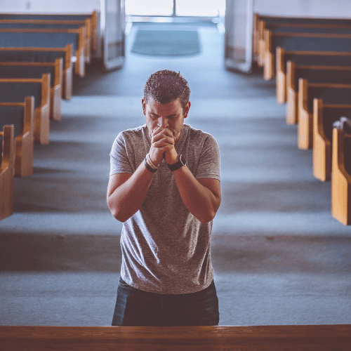

Iglesia cristiana Filadelfia
En la iglesia Filadelfia Nos dedicamos a aprender y crecer juntos. Ofrecemos enseñanzas prácticas y relevantes que pueden ayudarte en tu vida diaria, brindándote herramientas para enfrentar los desafíos con esperanza y fe.
Nuestra misión es: "Compartir el mensaje de Jesucristo y a guiar a otros en su camino espiritual. A través de la enseñanza y el discipulado, buscamos ayudar a las personas a crecer en su fe y a vivir de acuerdo con los principios cristianos.".
Ofrecemos un espacio para la adoración y la conexión espiritual. Nuestras reuniones son momentos para reflexionar, orar y encontrar paz interior.
Nuestra ubicación
Puedes visitarnos en el barrio Marruecos